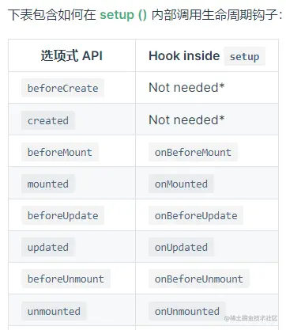
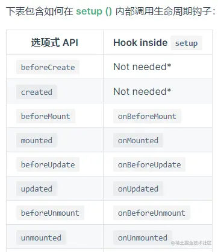

1、生命周期概述
每个 Vue 组件实例在创建时都需要经历一系列的初始化步骤,比如设置好数据侦听,编译模板,挂载实例到 DOM,以及在数据改变时更新 DOM。
在此过程中,它也会运行被称为生命周期钩子的函数,让开发者有机会在特定阶段运行自己的代码。
所以本质上我们学习这个生命周期是在学习各个生命周期钩子函数的用法。
vue整个生命周期如下：

所以本质上我们学习这个生命周期是在学习各个生命周期钩子函数的用法。
vue整个生命周期如下：
2、 vue3生命周期
和vue2的生命周期相比,在创建阶段的两个钩子被移除了,可以说是用setup()钩子替代了。
在销毁阶段两个钩子函数改名。所以可以说只剩下三个过程：挂载(mount)、更新(update)、卸载(unmount)。
又分成六个状态：挂载前、挂载完成、更新前、更新完成、卸载前、卸载完成。
其它还和之前一样,只不过钩子函数名字都加上前缀 on。
区别如下：
比较常用的就是onMounted、onUpdated 和 onUnmounted。这3个,而setup因为构建工具支持的语法糖,可以说是一直在使用。
onMounted 钩子可以用来在组件完成初始渲染并创建 DOM 节点后运行代码也就是在组件挂载完成后执行。这个钩子通常用于执行需要访问组件所渲染的 DOM 树相关的副作用
onUnmounted 注册一个回调函数，在组件实例被卸载之后调用,常用来手动清理一些副作用，例如计时器、DOM 事件监听器或者与服务器的连接。

区别如下：
选项式api 组合式api
在实例初始化之后、进行数据侦听和事件/侦听器的配置之前同步调用 beforeCreate 移除 created移除 使用setup。
在实例创建完成后被立即同步调用 beforeMount onBeforeMount()。
在挂载开始之前被调用 mounted onMounted() 。
在实例挂载完成后被调用 beforeUpdate onBeforeUpdate() 。
在数据发生改变后,DOM 被更新之前被调用 updated onUpdated() 。
在数据更改导致的虚拟 DOM 重新渲染和更新完毕之后被调用 beforeDestroy onBeforeUnmount()。
在卸载组件实例之前调用 destroyed onUnmounted() 在卸载组件实例后调用。
比较常用的就是onMounted、onUpdated 和 onUnmounted。这3个,而setup因为构建工具支持的语法糖,可以说是一直在使用。
onMounted 钩子可以用来在组件完成初始渲染并创建 DOM 节点后运行代码也就是在组件挂载完成后执行。这个钩子通常用于执行需要访问组件所渲染的 DOM 树相关的副作用
onUnmounted 注册一个回调函数，在组件实例被卸载之后调用,常用来手动清理一些副作用，例如计时器、DOM 事件监听器或者与服务器的连接。

{{message}}